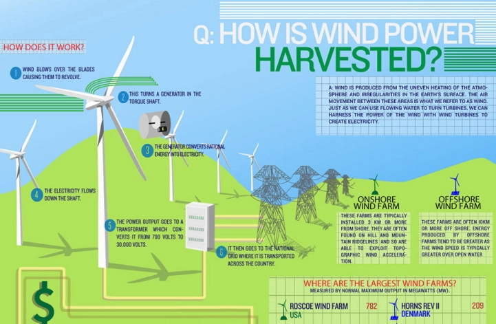

Second low carbon technology
Wind Turbines
What are wind turbines?
Wind turbines work on a simple principle: instead of using electricity to make wind—like a fan—wind turbines use wind to make electricity. Wind turns the propeller-like blades of a turbine around a rotor, which spins a generator, which creates electricity.
What do wind turbines do and how do they work?
Wind turbines can turn the power of wind into the electricity we all use to power our homes and businesses. They can be stand-alone, supplying just one or a very small number of homes or businesses, or they can be clustered to form part of a wind farm.

Pros of wind turbines
| |
Reason |
| 1 |
Free Fuel-Since wind turbines themselves run strictly on the power of wind generated, there is no need for fuel. |
| 2 |
One of the Cleanest Forms of Energy |
| 3 |
Advances in Technology-The latest advances in technology have transformed preliminary wind turbine designs into extremely efficient energy harvesters. |
Cons of wind turbines
| |
Reason |
| 1 |
Dangerous to Some Wildlife(birds,bats,etc.) |
| 2 |
Wind turbines can be quite noisy, which is why they’re mostly found in very rural areas where most people don’t live. |
| 3 |
Expensive Upfront Cost |
Website Content
| Page |
What this page is about |
| 1 |
Home page |
| 2 |
First Low carbon technology used to capture carbon or increase energy efficiency |
| 4 |
Companies that use these technologies |
| 5 |
The explanation of my thoughts about the impacts and benefits of these technologies to help to promote a green environment. |
| 6 |
Enquiry form |
| 7 |
Sign up page |
3